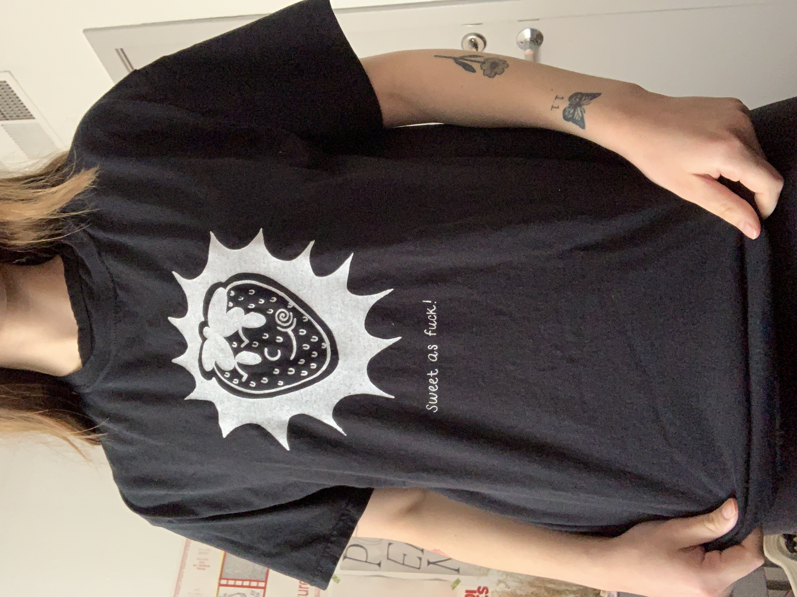
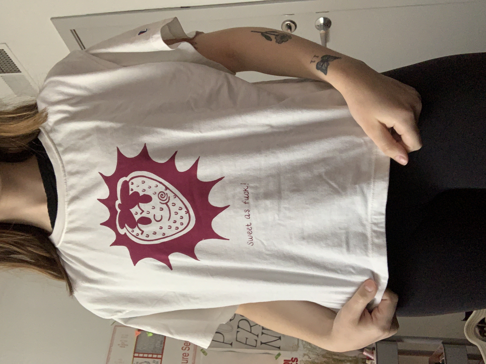
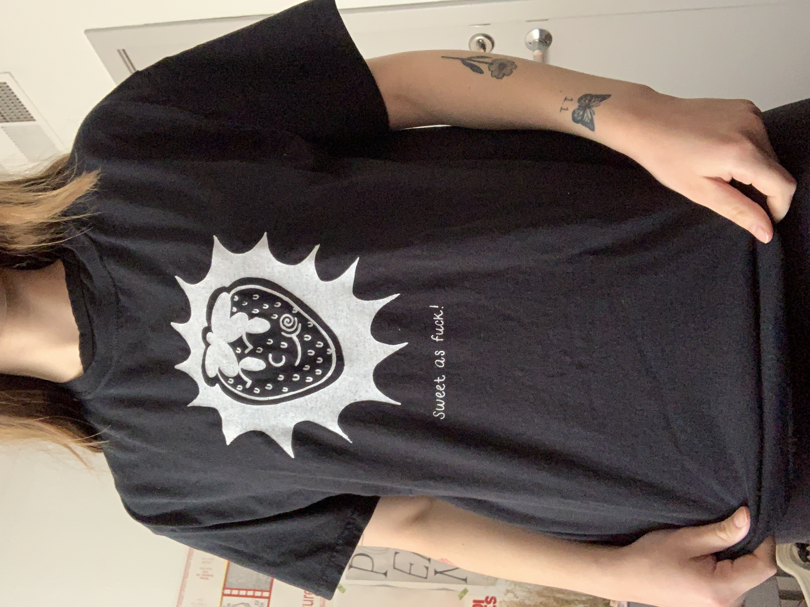
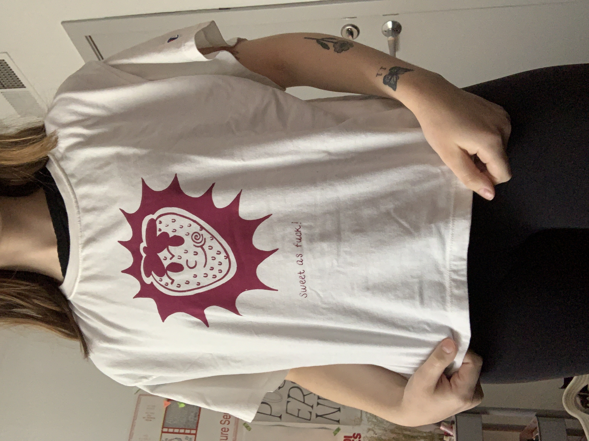

Screenprint T-Shirts
Handrawn design screenprinted on three shirt colors. Image has a srawberry with a smiling face with the caption, "Sweet as fuck!" These shirts were printed on recycled shirts from Circle Thrift RVA in Richmond, VA. return